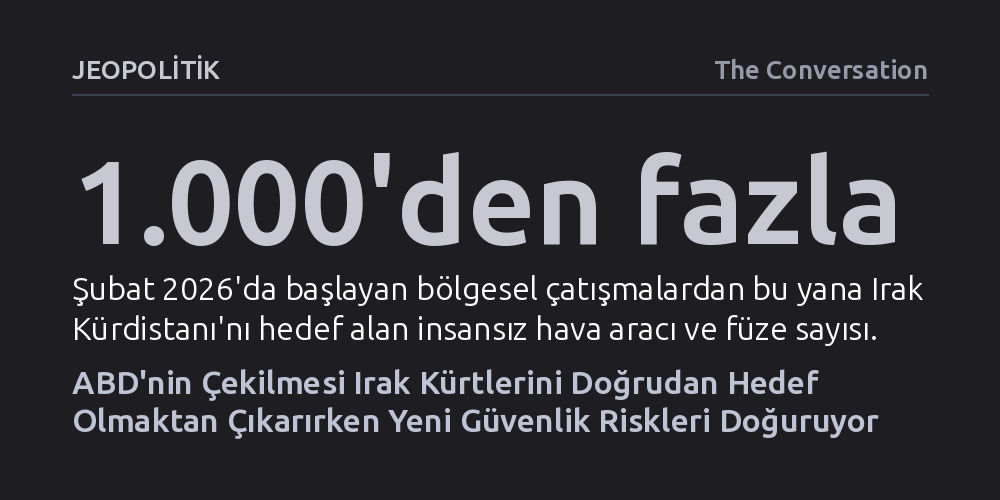

JEOPOLITIK · The Conversation · 2026-10-10
ABD güçlerinin Erbil'den çekilmesi, Irak Kürdistanı'nı Washington karşıtı milislerin doğrudan hedefi olmaktan çıkarıyor. Ancak hava savunma sistemlerinden yoksun kalan bölge, süregelen İran ve milis saldırılarına karşı Bağdat'ın yetersiz koruma kapasitesine bağımlı durumda kalıyor.
Yabancı askeri varlığın sona ermesinin tek başına egemenlik veya güvenlik getirmeyeceğini, asıl meselenin hava savunması ve iç istikrarı sağlama kapasitesi olduğunu gösteriyor.

30 Eylül 2026'da son Amerikan askerlerinin Erbil Hava Üssü'nden ayrılması, yalnızca askeri birlik ve teçhizatın tahliyesi anlamına gelmiyor; Irak Kürdistanı'ndaki güvenlik dengelerini de temelden değiştiriyor. Yaklaşık 6,5 milyonluk nüfusa ev sahipliği yapan bölgedeki Amerikan askeri varlığı, yıllar boyunca birbirine zıt iki etkiyi bir arada üretti. Bir taraftan bölgeye geniş bir caydırıcılık sağlayıp İran ve müttefiki milislerin İHA ile füze saldırılarına karşı koruma kalkanı sunarken, diğer taraftan Erbil'i Washington ile Tahran arasındaki bölgesel hesaplaşmanın doğrudan hedefi haline getirdi.
Amerikan askerlerinin ayrılması bu nedenle çift taraflı bir sonuç doğuruyor. Erbil artık Washington yönetimine baskı kurmak isteyen Tahran yanlısı milis grupların hedef tahtası olmaktan çıkabilir. Ne var ki bölge, doğrudan ABD varlığıyla ilgisi bulunmayan köklü iç ve bölgesel gerilimleri göğüslemesini sağlayan savunma imkanlarından da mahrum kalıyor. Dolayısıyla asıl mesele bölgenin güvenli hale gelip gelmediği değil; Amerikan varlığı nedeniyle doğan saldırıların mı yoksa bu varlığın sağladığı savunma kalkanının mı daha hızlı tükeneceğidir.
Amerikan birliklerinin ayrılışından hemen önceki günlerde, Irak Kürdistanı uzun süredir beklenen tarihi bir adımı tamamladı. Yıllarca bölgenin iki ana siyasi partisi olan KDP ve KYB arasında bölünmüş durumda bulunan Peşmerge güçleri, tek bir merkezi hükümet komutası altında birleştirildi. Washington'ın yıllardır talep ettiği bu reform, bölgesel güvenlik mimarisi açısından hayati bir kurumsal kazanım olarak kayıtlara geçti.
Fakat Peşmerge'nin birleşmesi, Erbil'in bugün karşı karşıya kaldığı yeni nesil tehditlerle uyuşmuyor. On yıllardır konvansiyonel kara çatışmalarında yetkinliğini kanıtlayan ve IŞİD ile mücadelede kilit rol üstlenen Peşmerge güçleri, modern hava saldırılarını durduracak teknik donanıma sahip değil. Oysa bölgeye yönelik asıl tehdit karadan değil; Şubat 2026'dan bu yana petrol sahalarını, rafinerileri ve enerji altyapısını vuran binden fazla insansız hava aracı ve füzeden kaynaklanıyor. Bölge Başbakanı Mesrur Barzani'nin de açıkça ifade ettiği gibi, yerel yönetimin elinde bu tehditleri bertaraf edecek bağımsız bir hava savunma sistemi bulunmuyor.
Bağdat'taki merkezi hükümet, koalisyon güçlerinin ayrılışını yabancı askerlerin gitmesi ve güvenliğin ulusal kurumlara devri gerekçesiyle egemenlik günü olarak kutladı. Ancak yabancı birliklerin çekilmesi, Irak'ta egemenliği siyasi bir slogandan çıkarıp çetin bir sınava dönüştürdü. Kürdistan Bölgesi Başkanı Neçirvan Barzani'nin hatırlattığı gibi, "Egemenlik yalnızca yabancı güçlerin ayrılması anlamına gelmez, aynı zamanda devletin otorite kurabilme kabiliyetidir."
Bağdat yönetiminin mevcut tablosu ise bu tanımın gerisinde kalıyor. Merkezi hükümet, ülke genelinde faaliyet gösteren İran destekli silahlı milislerin kontrolünü sağlamakta zorlanıyor ve bu grupların silahlarını denetim altına alma süresini direnç nedeniyle Haziran 2027'ye kadar uzatmak zorunda kaldı. Dahası, Irak'ın ulusal hava savunma sistemi henüz kurulum aşamasında olup tüm hava sahasını koruyacak kapasiteye ulaşmış değil. Bu boşluk, hava güvenliğinde Bağdat'a bel bağlamak zorunda kalan Erbil için ciddi bir zafiyet alanı yaratıyor.
1991 Körfez Savaşı'nın ardından kurulan uçuşa yasak bölgeden 2003 askeri müdahalesine ve IŞİD ile mücadeleye kadar Washington-Erbil ilişkisini daima askeri gereksinimler şekillendirdi. Amerikan birliklerinin Erbil'den çekilmesiyle birlikte bu askeri mantık ömrünü tamamladı. Şimdi iki taraf arasındaki stratejik ortaklığın askeri koruma gerekçesi olmadan nasıl sürdürüleceği tartışılıyor.
Bu dönüşümün ilk somut adımı, ABD'nin Erbil'de 2025 yılında tamamladığı geniş konsolosluk yerleşkesiyle atıldı. Yalnızca güvenliğe dayalı bir ortaklık Washington'ın öncelikleri değiştikçe dağılma riski taşırken; diplomasi, eğitim ve ticari yatırımlar ilişkiye daha kalıcı bir zemin sunabilir. Nitekim ABD, Kürdistan Bölgesi'nde faaliyet gösteren şirket sayısı bakımından altıncı sırada bulunuyor. Bundan sonraki güvenlik ortamı bir gösterge olacak: Eğer çekilmenin ardından saldırılar durursa ABD varlığının istikrarsızlık kaynağı olduğu görülecek; saldırılar devam ederse bölgenin hava savunmasız kaldığına dair endişelerin haklılığı kanıtlanacak.